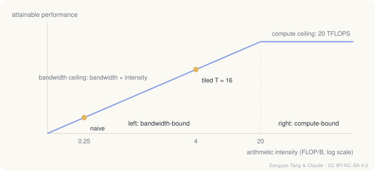
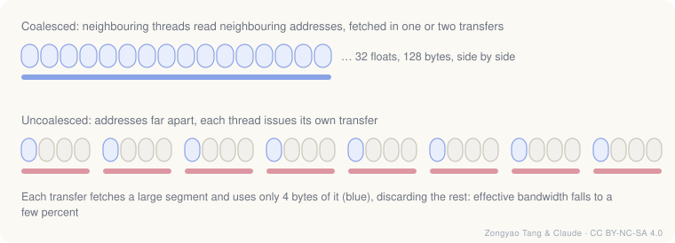
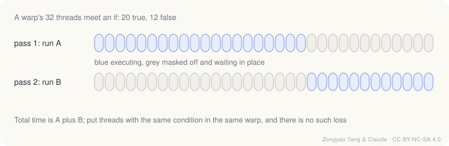

The previous unit gave a criterion (arithmetic intensity) and a method (tiling). This unit extends them into a systematic approach: first use the roofline to decide which wall a kernel is hitting → against the bandwidth wall, the way memory is accessed can by itself make a several-fold difference (coalescing) → on the execution side, disagreement within a warp wastes compute (branch divergence) → threads made too fine-grained have a cost too (coarsening) → finally gather it all into one checklist.
Part 3 · The GPU and the CUDA execution model3.4 The CUDA performance checklist
Translated by AI (Anthropic's Claude) from the Chinese edition. The Chinese original is the reference.
This unit answersOnce a kernel is correct, how do you make it faster systematically?
Follows 3.3: turns the knowledge of hardware and the memory hierarchy into an optimisation checklist you can go through item by item.
- The roofline: first see which wall you are hitting
- Coalesced memory access: a warp's 32 reads are best merged into one
- Branch divergence: a warp taking two paths has to run twice
- More threads is not always better: sometimes one thread should do several shares
- The essence of the optimisation checklist: keep the compute units busy all the time
Explanation
1The roofline: first see which wall you are hitting
The performance a kernel can reach ≤ min(peak compute, bandwidth × arithmetic intensity). Drawn out, it is a slope (the bandwidth wall) followed by a horizontal line (the compute wall), and the arithmetic intensity at the corner is this machine's balance point.
The previous unit worked it out: a kernel's arithmetic intensity times the memory bandwidth is the highest rate of operations the bandwidth can support. Draw this relationship as a chart and you have the roofline.
The x-axis is arithmetic intensity (FLOP/B), the y-axis the performance reached (FLOP/s). Performance has two ceilings:
- The bandwidth ceiling: performance ≤ bandwidth × arithmetic intensity. A slope starting from the origin.
- The compute ceiling: performance ≤ peak compute. A horizontal line.
Together the two lines look like a roof. The arithmetic intensity at the corner = peak compute ÷ bandwidth, the 20 FLOP/B worked out in the previous unit.

The roof drawn with the numbers in the text: bandwidth 1000 GB/s, peak 20 TFLOPS, corner at 20 FLOP/B How to use it: work out your kernel's arithmetic intensity and see which side of the corner it falls on.
- On the left (under the slope): bandwidth-bound. The way to more performance is to move right, that is, to raise arithmetic intensity: tiling, fusion, representing the data in fewer bytes. Optimising the arithmetic itself does nothing here.
- On the right (under the horizontal line): compute-bound. Only now are Tensor Cores and lower precision worth considering.
If measured performance is far below the roof, neither is being fully used, and the problem is elsewhere: memory accesses not coalesced, warps diverging, occupancy too low, or the time going into overhead. The rest of this unit covers these reasons for being "far below the roof".
Hands-on: work out your own GPU's corner, and place common operators
First look up two numbers (on the GPU's specification page or on Wikipedia):
- Memory bandwidth, in GB/s.
- Peak compute, in TFLOPS. Tell apart ordinary single precision (fp32) and half precision on Tensor Cores; the latter is much higher.
Corner = peak compute ÷ bandwidth. With 1000 GB/s of bandwidth and 20 TFLOPS of fp32 compute, for instance, the corner is at 20 FLOP/B; if Tensor Cores reach 300 TFLOPS, the corner moves to 300 FLOP/B: the stronger the compute, the harder it is to feed.
Then estimate the arithmetic intensity of a few common operators (all fp32, 4 bytes per number):
c = a + b: read 2 numbers and write 1, 12 bytes in all, 1 operation, about 0.08 FLOP/B.- ReLU: read 4 bytes, write 4 bytes, 1 operation, about 0.13 FLOP/B.
- Naive matrix multiplication: 0.25 FLOP/B; about 4 FLOP/B with 16×16 tiling.
- A fully optimised large matrix multiplication (n×n): 2n³ operations, only 3n² numbers read and written. At n = 4096, about 680 FLOP/B.
Compare them with the corner: element-wise operators sit two or three orders of magnitude below it and are always bandwidth-bound; the only way to optimise them is to move less data (fusion, 4.2). Large matrix multiplications are far to the right of the corner, compute-bound, and only they can make use of Tensor Cores.
This also explains a common observation: on a new GPU with more compute, matrix multiplications got much faster while LayerNorm and activation functions barely changed, because what limits them is bandwidth.
An analogyLike a motorway: however fast the cars (compute), they are limited by the number of lanes (bandwidth); with enough lanes, they are capped by the speed limit instead.
So before optimising, work out the kernel's arithmetic intensity: in the sloped region, find ways to move less data (fusion, reuse, lower precision); only in the flat region is faster computation (Tensor Cores) worth it.
Builds on Arithmetic intensity: how many operations per byte movedA program is slow for only three reasons: compute, bandwidth, overheadUsed later in The essence of the optimisation checklist: keep the compute units busy all the timePrefill is limited by compute, decode by bandwidthFirst ask "what is it waiting for", then choose the meansSourcesPMPP chapter 5: the roofline- Suppose the kernel is bandwidth-bound. Reading the same 1 GB of data in different ways can take several times longer or shorter. The reason lies in how GPU memory works.
2Coalesced memory access: a warp's 32 reads are best merged into one
GPU memory reads out a whole contiguous stretch of data at a time (a DRAM burst). If the addresses the 32 threads of a warp access happen to be contiguous, the hardware merges them into very few transfers; scattered addresses need many transfers, and much bandwidth is wasted.
GPU memory does not hand out data byte by byte. Each access delivers a whole contiguous stretch. If you want only 4 bytes of it, the rest is read out all the same, then thrown away.
Combine this with how a warp works: the 32 threads of a warp execute the same "read memory" instruction at the same time, and the hardware looks at the 32 addresses.
- If they are contiguous (thread 0 reads
a[0], thread 1 readsa[1]…), the 32 floats are 128 bytes in all and come back in one or two transfers. This is called coalesced access. - If they are far apart (thread 0 reads
a[0], thread 1 readsa[1000]…), 32 transfers are needed, each bringing back a whole stretch of which 4 bytes are used. The effective bandwidth is a few dozen times smaller.

The same 32 numbers read: contiguous addresses or not makes a difference of dozens of times For matrices in particular: in C, matrices are stored by rows, so elements of the same row sit next to each other in memory. Have neighbouring threads handle neighbouring columns of the same row (
a[row][threadIdx.x]) and the addresses are contiguous: coalesced. Have neighbouring threads handle neighbouring rows of the same column (a[threadIdx.x][col]) and each address jumps a whole row: not coalesced.So when writing a kernel, get into a habit: for every memory statement, ask "when threadIdx.x increases by 1, does the address increase by just one element". When the algorithm really needs access by columns, first move a block of data into shared memory in the coalesced way, then read it from shared memory in any order you like, because shared memory does not have this problem.
An analogyLike a bus picking people up at stops: filling the bus at one stop is cheapest; if the 32 passengers are scattered over 32 places across the city, it takes 32 trips.
So have neighbouring threads (neighbouring threadIdx.x) access neighbouring addresses: for a matrix stored by rows, assign threads along the rows. When the access pattern is bad, first move the data into shared memory in a coalesced way, then read it in the other direction there (corner turning).
Builds on Warps: 32 threads following the same commandThe closer storage is to the computation, the faster it is, and the smallerUsed later in Triton lets you think in "blocks"SourcesPMPP §6.1PMPP §6.1 DRAM burst- If they are contiguous (thread 0 reads
- Coalesced access is a requirement that comes from a warp "accessing memory together". A warp "executing instructions together" brings a matching requirement: everyone had better take the same path.
3Branch divergence: a warp taking two paths has to run twice
The threads of a warp share one stream of instructions. If an if/else sends some threads down A and others down B, the hardware can only execute A first (the threads going to B sit idle), then B.
The 32 threads of a warp share one stream of instructions. At
if (condition) { A } else { B }, if the condition is true for all 32 threads, they execute A together, no problem.But if it is true for 20 and false for 12, the hardware cannot have the two groups execute different instructions at once. It can only take two passes: execute A first, with those 12 threads masked off and waiting; then execute B, with the 20 waiting. The warp spends the time of A plus B, and in each pass part of its arithmetic units sit idle.

A warp taking two paths has to run twice Different loop counts are the same thing: in
for (k = 0; k < len[i]; k++)with a differentlen[i]for each thread, the whole warp has to keep running until the thread with the most iterations finishes, and threads that finish early just wait.Note that divergence happens only within a warp. If the first warp all goes down A and the second all goes down B, neither loses anything. So the way to reduce divergence is usually not to remove branches but to rearrange the data so that elements with the same condition fall in the same warp. The reduction in 3.5 has a beautiful example: the algorithm is exactly the same, only the arrangement of indices changes, and divergence all but disappears.
The bounds check
if (i < n)is a branch too, but only the last warp can diverge, so it can be ignored.An analogyIn a drill squad where half the people are to do push-ups and half sit-ups, the instructor can only call one command first, then the other.
So branch conditions are best aligned with warps, so that a whole warp goes the same way; a branch that is uniform across each warp costs almost nothing, and the real cost comes from disagreement within a warp.
Used later in Keep the threads still at work next to each otherSourcesPMPP §4.5- The advice so far has been "make threads cooperate better". There is another situation: the threads themselves are too many and too fine.
4More threads is not always better: sometimes one thread should do several shares
Splitting work as finely as possible (one thread per element) has a cost: loading the same data repeatedly, repeated synchronisation and index computation. If the hardware cannot run that many threads at once anyway, the extra ones are only queueing. Thread coarsening has one thread handle several elements, spreading these repeated costs.
Splitting work into as many threads as possible is not free. Parallelism has a "price":
- Different threads may each load the same data;
- Every block does its own synchronisation and index computation;
- Every extra block takes another share of shared memory.
If the hardware really can run these threads at the same time, the price is worth paying. But when the number of threads far exceeds the hardware's parallel capacity, the extra blocks only queue, waiting for those ahead to finish. Then the price of parallelism is paid, but its benefit is not received.
Thread coarsening gives one thread (or one block) several shares of work. Take tiled matrix multiplication: a block used to compute one tile of C, loading one tile of A and one of B. Several horizontally neighbouring output tiles use the same tile of A. After coarsening, one block computes 4 neighbouring output tiles in a row, loading the tile of A once instead of 4 times.
More coarsening is not always better. With fewer threads, there are fewer warps on standby on the SM, and less ability to hide latency (3.3). So it is a parameter to measure: start with no coarsening, increase it step by step; performance rises then falls, and you take the peak.
An analogyWhen moving house, if everyone carries one book at a time the stairs are packed with people all running back and forth; each carrying a stack of books is faster.
So once there is enough parallelism, some coarsening often speeds things up; but too much leaves too few threads to hide latency (3.3), and the balance between the two has to be found by trying.
SourcesPMPP §6.3- Taken one by one, the advice looks scattered. Put it together with the previous unit's tiling, and it is really answering one question.
5The essence of the optimisation checklist: keep the compute units busy all the time
PMPP's optimisation checklist (raise occupancy, coalesce memory access, reduce branch divergence, tile to reuse data, privatisation, thread coarsening) looks scattered, but all of it solves the same thing: reduce waiting, whether for data, for idle threads, or because of duplicated work.
Arrange the techniques from these two units by "which kind of waiting it removes":
- Waiting for data to arrive from GPU memory: coalesced access (no transfer wasted), tiling (data moved in is used many times).
- Nothing else to do while waiting for data: higher occupancy (enough warps on standby on the SM).
- Some threads in a warp just tagging along: less branch divergence.
- Duplicated work and queueing: thread coarsening; privatisation (each thread first accumulates in its own registers or shared memory, merging into the common location only at the end, so that everyone is not fighting to update the same place).
Seen this way, the checklist is not six rules to memorise but a diagnostic procedure: first use the roofline to see which wall you are near, then ask what the arithmetic units are waiting for, then find the matching item.
As for tools, Nsight Compute gives measured metrics for each kernel: what percentage of memory bandwidth is used, what the occupancy is, what fraction of instructions are divergent. These numbers map one to one onto the items of the checklist. The habit of "look at the metrics first, then choose the technique" matters more than remembering any single trick.
An analogyLike running a kitchen: ingredients ready, a smooth workflow, nobody standing idle, and the dishes come out fast.
So given a slow kernel, first ask "what is it waiting for", then go to the checklist; that works far better than trying things at random. The metrics in Nsight Compute are telling you what it is waiting for.
SourcesPMPP §6.4
Putting it together
Decide first: low arithmetic intensity means bandwidth-bound, high means compute-bound. When bandwidth-bound, coalesce memory accesses and reuse data; when compute is wasted, check branch divergence and occupancy; when parallelism goes too far, coarsen threads. Every item on the checklist answers "what are the compute units waiting for".
Test yourself
Without looking back at the explanation, say it in your own words.
- How does the roofline model tell whether a kernel is bandwidth-bound or compute-bound?
- What is coalesced memory access? Why should neighbouring threads access neighbouring elements of the same row of a matrix stored by rows?
- How does branch divergence come about? What does it cost?
- What is thread coarsening? When is it useful?
- What items are on PMPP's optimisation checklist? What problem do they all solve?